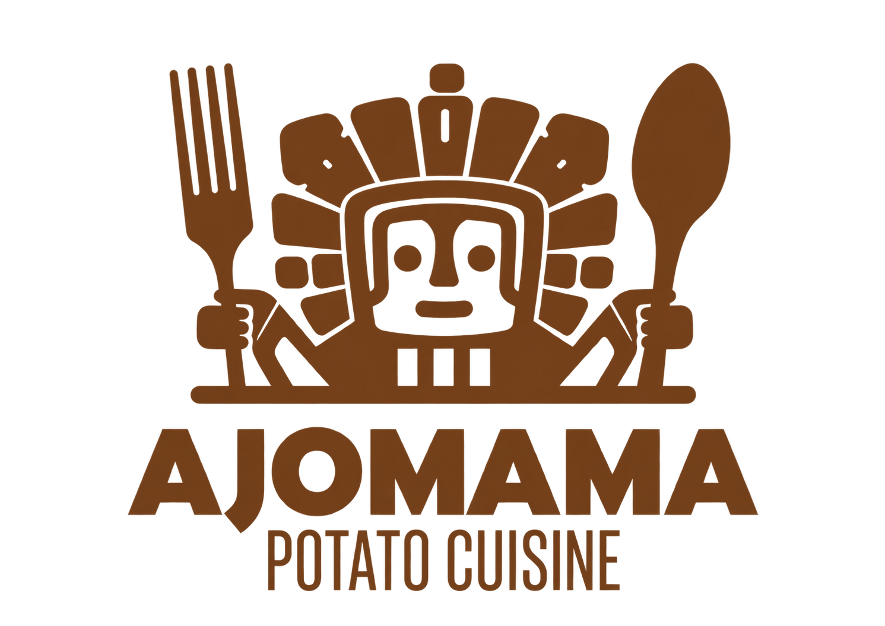

Šeimos bulvių restoranas
Viena bulvė. Tiek daug galimybių.
Keptos įdarytos bulvės, jūsų pasirinkti priedai ir tirpstantis Raclette sūris.
AjomamaŠeimos bulvių restoranasKeptos įdarytos bulvės, jūsų pasirinkti priedai ir tirpstantis Raclette sūris.Vilnius
Ajomama virtuvė
Mūsų istorija prasidėjo nuo bulvės
Ajomama - nedidelis šeimos restoranas, kuriame viskas sukasi apie bulves. Rinkitės mėsos, silkės, vegetariškus ar veganiškus priedus ir susikurkite savo derinį.
Atraskite meniuAjomama iš arčiau
Skoniai, dėl kurių verta užsukti.
Laikas jūsų apsilankymui
Food truck'as Jūsų šventėms
Ajomama maisto vagonėlis gali atvykti į jūsų šventę. Dėl datos ir pasiūlymo susisiekite telefonu.
Peržiūrėti meniu